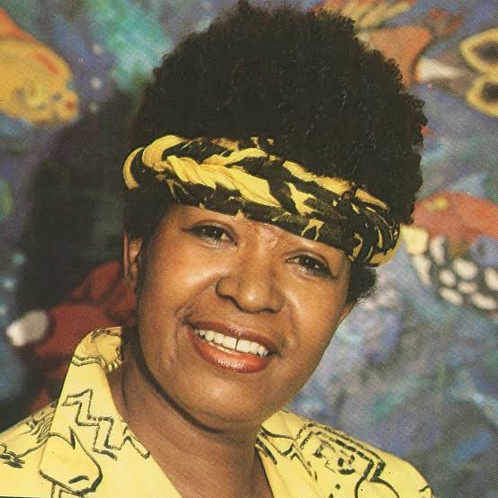

Quem foi Lélia Gonzalez?

Lélia Gonzalez (1935–1994) foi uma das maiores intelectuais, filósofas, antropólogas, professoras e militantes do movimento negro e feminista no Brasil. Nascida em Belo Horizonte (MG) em uma família pobre e numerosa, mudou-se ainda criança para o Rio de Janeiro, onde superou barreiras sociais e raciais para se graduar em História e Filosofia, além de conquistar o mestrado em Comunicação e o doutorado em Antropologia Política. Como docente, destacou-se na Pontifícia Universidade Católica do Rio de Janeiro (PUC-Rio), onde chegou a chefiar o Departamento de Sociologia e Política.
Na militância política e social, Lélia teve papel decisivo na redemocratização do país, sendo uma das fundadoras do Movimento Negro Unificado (MNU), do Instituto de Pesquisas das Culturas Negras (IPCN) e do Nzinga Coletivo de Mulheres Negras. Sua produção intelectual revolucionou o pensamento brasileiro ao analisar como o racismo e o sexismo operam juntos na marginalização das mulheres negras e ao desmontar o mito da "democracia racial".
Entre suas maiores contribuições teóricas estão os conceitos de Amefricanidade — que valoriza a experiência histórica e cultural comum de pessoas negras e indígenas nas Américas — e Pretuguês, termo que criou para reconhecer a influência decisiva das línguas africanas na formação do português falado no Brasil. Sua obra permanece como referência fundamental para a educação antirracista e os estudos de gênero e raça no mundo todo.
Obras e Livros
Mapa Mental
Apresentação do Projeto
Quer assistir ao vídeo da nossa apresentação novamente? Confira abaixo:
Assistir ao Vídeo da ApresentaçãoMapeamento: Mulheres Negras na Ciência Brasileira
Dificuldades de visibilidade, barreiras históricas e relação com Lélia Gonzalez
Ideia Central: A dificuldade de encontrar mulheres negras na ciência não significa que elas não tenham produzido conhecimento. Está relacionada às barreiras de acesso e permanência, à pouca divulgação e ao apagamento de suas contribuições.
1. Dificuldade de encontrar mulheres negras na ciência
A dificuldade de encontrar essas pesquisadoras não acontece porque elas não existam ou não produzam conhecimento. Ela está ligada à pouca divulgação de suas trajetórias e às desigualdades que limitam sua presença e seu reconhecimento.
- Pouca divulgação de pesquisadoras negras: Muitas cientistas negras têm seus trabalhos divulgados em espaços restritos, como grupos acadêmicos ou eventos específicos.
- Baixa representatividade em universidades e instituições científicas: Quando há poucas mulheres negras entre professoras e dirigentes, estudantes têm menos referências.
- Pouca presença nos livros didáticos: Os materiais escolares costumam apresentar um número limitado de cientistas negras.
- Dificuldade de encontrar registros históricos: Documentos, pesquisas e relatos sobre essas mulheres podem estar dispersos ou pouco organizados.
- Falta de reconhecimento em diferentes áreas científicas: Algumas pesquisadoras recebem menos destaque, citações, prêmios ou oportunidades.
2. Falta de valorização de suas histórias
- Apagamento histórico das contribuições: Pesquisas e realizações de mulheres negras podem ser omitidas de livros e registros oficiais.
- Reconhecimento tardio de descobertas e pesquisas: Algumas pesquisadoras só recebem atenção muitos anos depois de realizar seus trabalhos.
- Maior valorização de cientistas homens e brancos: Cria a impressão equivocada de que apenas esses grupos foram responsáveis por grandes descobertas.
- Pouca divulgação na televisão, internet e outros meios: O público tem menos contato com suas histórias e realizações.
- Falta de reconhecimento para o Brasil: Pesquisas feitas por mulheres negras ajudam a desenvolver áreas como saúde, educação, tecnologia e ciências humanas.
3. Principais barreiras enfrentadas
- Racismo estrutural: Desigualdade racial presente nas estruturas da sociedade e das instituições.
- Machismo e discriminação de gênero: Receber menos crédito por ideias ou enfrentar dificuldades para ocupar liderança, combinado ao racismo.
- Desigualdade no acesso à educação: Diferenças de renda, qualidade da escola, acesso à internet e materiais.
- Dificuldade de acesso a bolsas e oportunidades de pesquisa: A distribuição desigual de recursos dificulta a continuidade dos estudos.
- Menor oportunidade de ocupar cargos de liderança científica: Barreiras para se tornarem coordenadoras ou líderes de grupos de pesquisa.
- Desigualdade de condições para permanecer na carreira: A necessidade de trabalhar e a falta de apoio financeiro tornam a permanência mais difícil.
4. Relação com Lélia Gonzalez
- Invisibilidade histórica da população negra: Lélia questionou a forma como a história brasileira esconde a participação negra na formação do país.
- Racismo e sexismo como fatores de exclusão: Uma mulher negra enfrenta preconceitos relacionados à raça e ao gênero ao mesmo tempo.
- Desvalorização da produção intelectual das mulheres negras: O pensamento de Lélia combate a ideia de que apenas grupos privilegiados produzem conhecimento importante.
- Reconhecimento como produtoras de conhecimento: Dar visibilidade às pesquisadoras negras e garantir que sejam reconhecidas na ciência brasileira.
Diário da Pesquisa: Os Algoritmos na Prática
Relato dos autores: Thavinny e EfrainDurante a produção deste trabalho, vivenciamos na prática o viés algorítmico estudado na pesquisa:
- Busca e Mapa Mental (Efraim): Mesmo pesquisando especificamente por "mulheres negras na ciência" no Google, os primeiros resultados ainda priorizaram mulheres brancas. Ao pedir para o ChatGPT gerar um mapa mental sobre Lélia Gonzalez, a IA ilustrou o material com mulheres brancas.
- Vídeo de Apresentação (Thavinny): Ao gerar o vídeo no Google Flow com um roteiro descrevendo uma menina negra e um menino pardo de cabelo crespo, a ferramenta ignorou a descrição e criou três pessoas brancas, loiras e de cabelo liso.
Quiz Interativo: Teste seus conhecimentos!
Participe do nosso desafio sobre Lélia Gonzalez e mulheres negras na ciência.
Acessar kahootFontes e Referências
- Enciclopédia Mulheres na Filosofia (UNICAMP) — Verbete acadêmico sobre a biografia, obras e conceitos de Lélia Gonzalez.
- Portal da Prefeitura de Belo Horizonte — Registro oficial na seção Personalidades Negras sobre a trajetória e o legado de Lélia Gonzalez.
- Relatório Anual Socioeconômico da Mulher (RASEAM 2025) — Ministério das Mulheres: dados sobre a distribuição de bolsas de pesquisa por raça/cor.
- SciELO Brasil — Artigos científicos sobre desigualdades de gênero e raça na ciência brasileira e instituições de ensino superior.